Contents
Skylar Tamke, Homework 2 -Cepstrum
Feeding in the waveform to managable variables
clc clear %file that says 'Help peter pick a peck of potatos.' filename = 'SX29.WAV'; phntable = readtable("SX29phoneam.txt"); %code provided on handout by Snider fid = fopen(filename,'r'); status = fseek(fid, 1024, -1); [wave,count] = fread(fid,inf,'int16'); fclose(fid); Fs = 16000; N = 14; %to change the wave length into a nice number to divide into count = length(wave)-3; % This section is plotting the formants of the vowels in the speech sample % in a scatterplot. Each of the plots are color coded to match the vowel % that they represent. %vowels % 3310,4493,'eh' vowel 1 % 9140,11320,'ey'; vowel 2 % 13230,13720,'ix'; vowel 3 % 15620,17080,'ih'; vowel 4 % 31360,34270,'ow'; vowel 5 % 20690,22440,'eh'; vowel 6 % 23630,24320,'ix'; vowel 7 % 26690,27160,'ix'; vowel 8 % 28757,30880,'ey'; vowel 9 % 18140,19000,'ix'; vowel 10 % creating a vector for scatter plotting the formants later vowel_index = [ 3310 4493; 9140 11320; 13230 13720; 15620 17080; 31360 34270; 18140 19000; 20690 22440; 23630 24320; 26690 27160; 28757 30880]; vowel = [1 2 3 4 5 3 1 3 3 2];
Homomorphic filtering process, based on lecture notes
The lecture notes showed the method for filtering a waveform using the concept of cepstrums
vowel_windows = {10};
% seperating the vowels
for i = 1:10
vowel_windows{i,:} = wave(vowel_index(i,1):vowel_index(i,2));
end
%number of fft points to take
L = 1024;
% for freq. scaling at the end
f = Fs/(L)*(1:L);
% taking the fft
fft_vowel = {10};
for i = 1:10
fft_vowel{i,:} = fft(vowel_windows{i,:},L);
end
% putting vowels into the log domain
ln_vowel = {10};
for i = 1:10
ln_vowel{i,:} = log(abs(fft_vowel{i,:}));
end
% putting the log vowels into the cepstrum domain
cept_vowel = {10};
for i = 1:10
cept_vowel{i,:} = ifft(ln_vowel{i,:},L);
end
% liftering the parts we want
liftering_vowels = cept_vowel;
for i = 1:10
temp = liftering_vowels{i,:};
temp(N+1:end-N) = 0;
liftering_vowels{i,:} = temp;
end
% taking a fft to get back into the log domain
decept = {10};
for i = 1:10
decept{i,:} = abs(fft(liftering_vowels{i,:},L));
end
% Taking the exponential to get back into the frequency domain
delog = {10};
for i = 1:10
delog{i,:} = exp(decept{i,:});
end
Plotting all of the vowels ceptstrum coefficients and spectrum with envelope overlap
% Creating a plot for each of the vowels with their freq spectrum and cept % coefficiets for i = 1:10 figure(i) subplot(2,1,2) plot(cept_vowel{i,:}) switch vowel(i) case 1 title("Cepstrum coefficients for 'ey'") case 2 title("Cepstrum coefficients for 'eh'") case 3 title("Cepstrum coefficients for 'ix'") case 4 title("Cepstrum coefficients for 'ih'") case 5 title("Cepstrum coefficients for 'ow'") end % plotting the spectrum with the envelope subplot(2,1,1) plot(f,(delog{i,:}), 'r') switch vowel(i) case 1 title("Spectrum and envolope of vowel 'ey'"); case 2 title("Spectrum and envolope of vowel 'eh'"); case 3 title("Spectrum and envolope of vowel 'ix'"); case 4 title("Spectrum and envolope of vowel 'ih'"); case 5 title("Spectrum and envolope of vowel 'ow'"); end hold on subplot(2,1,1) plot(f,(abs(fft_vowel{i,:})),'b') end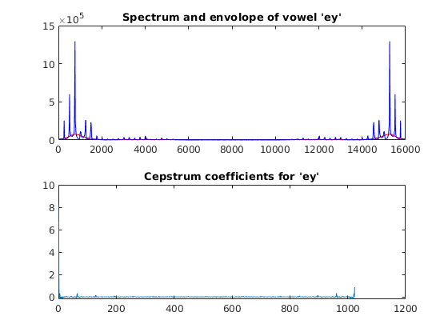 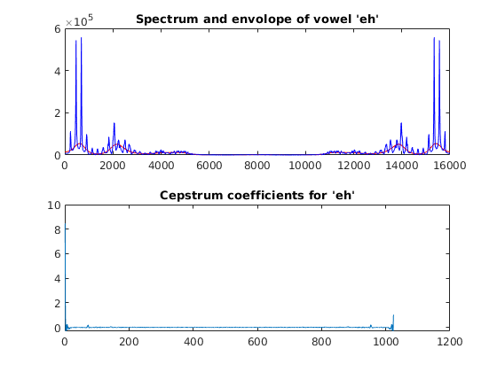 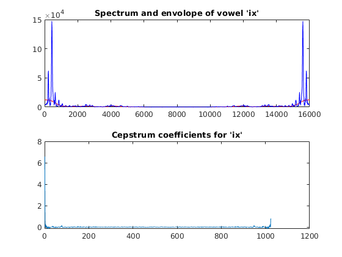 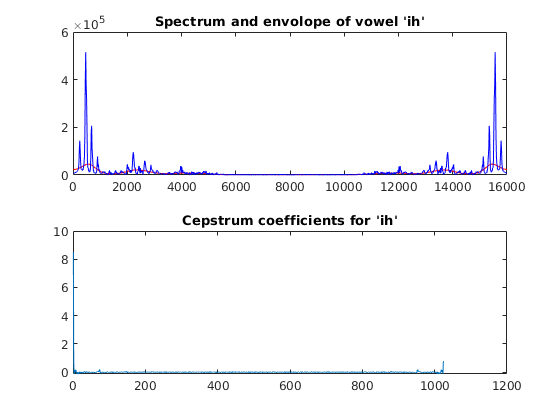 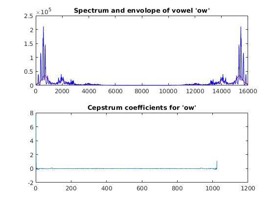 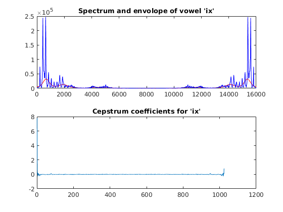 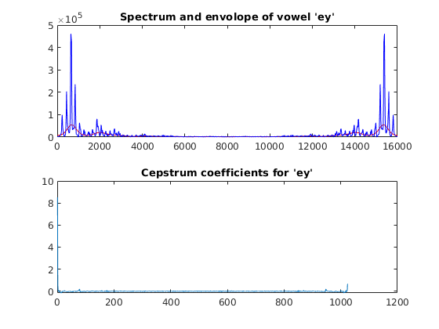 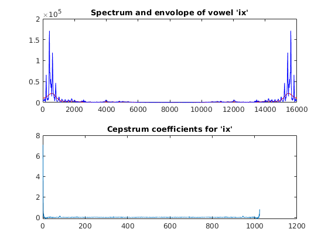 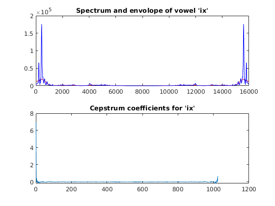 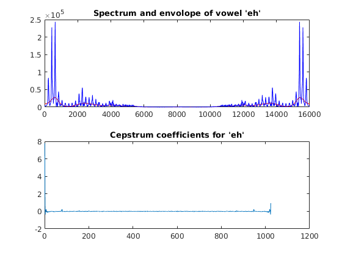
Formants of the vowels
for i = 1:10 [pks,indc] = findpeaks(delog{i,:},f); formant1{i,:} = round(indc(1)); formant2{i,:} = round(indc(2)); end figure(11) hold on % % first the vowels from the least squares method sent to the scatter plot % and color coded to the vowels for i = 1:10 switch vowel(i) case 1 scatter(formant1{i},formant2{i},'r'); case 2 scatter(formant1{i},formant2{i},'b'); case 3 scatter(formant1{i},formant2{i},'m'); case 4 scatter(formant1{i},formant2{i},'g'); case 5 scatter(formant1{i},formant2{i},'k'); end end title("scatterplot of vowel formants") % just adding a legend to show which colors correspond to the vowels they % are plotting lgn = legend({'ey', 'eh', 'ix', 'ih', 'ow'}); lgn.NumColumns = 2; lgn.Location = 'southeast'; lgn.Title.String = "Vowel sounds";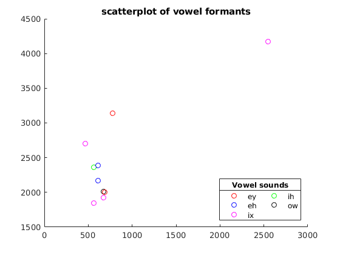